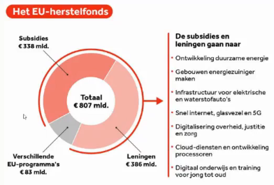

Dit evenement werd georganiseerd op 7 december 2021 om 19u30, het duurde ongeveer 1 uur. Het ging normaal gezien een fysiek evenement zijn in Kortrijk, maar wegens corona moesten ze dit digitaal doen.
De eerste spreker was Steven Van Hecke, professor aan KU Leuven.
Europa heeft heel lang de traditie gehad om te denken op middellange en lange termijn. Dit betekent dat ze niet zo zeer denken aan wat er kan gebeuren op korte termijn.
In begin jaren 2000 had de Europese Unie een plan om tegen 2010 zich in te zetten voor de groei en aanbieding van meer jobs. Dit heette de Lissabonstrategie. Deze strategie is jammer genoeg niet gelukt, het is niet omdat er een plan is dat het altijd zal lukken. De reden dat dit niet was gelukt, is door het debat rond de euro en de economische crisis.
De Europese Commissie besloot in 2019 om dit project te ontwikkelen. Het doel van dit project is om de transformatie naar een digitale samenleving en economie zo groen mogelijk te laten gebeuren. Hierbij moeten ze letten op allerlei zaken en bestuderen wat de beste mogelijkheden zijn. Dit zal zo'n 5 tot 10 jaar duren.
U vraagt zich misschien af waarom dit moet gebeuren.
Zoals we merken en horen in het nieuws zitten we met het probleem van klimaatverandering. De mens is hiervan de oorzaak, om de verandering te remmen moeten we aanpassingen doen aan onze levensstijl. Europa heeft ook een grote digitale achterstand vergeleken met andere delen van de wereld. De leiders zijn momenteel China en de Verenigde Staten. Covid19 heeft bewezen hoe snel wij kunnen veranderen naar een digitale samenleving.
Het doel is om Europa klimaatneutral te maken tegen 2050.
De tweede spreker is Tom Vandenkendeleare, hij zal bespreken hoe de transitie verloopt in de verschillende sectoren.
Hij is onderdeel van de commissie interne markt. Hij reguleert de digitale wereld en digitale markt. Hoe kopen we online? Wat is illegaal online? Hoe kunnen we dit met elkaar verbinden?
Bij de commissie defensie en veiligheid hebben ze vastgesteld dat de cyberveiligheid deel uit maakt over hoe wij naar de defensie moeten kijken in de EU. Bv: ziekenhuizen die gehacked worden in het buitenland.
In de landbouw commissie is er een grote transitie die moet gebeuren in de landbouw sector naar de toekomst toe.
We doen niet genoeg inspanning om dit te realiseren en het doel van 2050 te behalen. Europeanen zijn de laatste jaren niet veel veranderd qua gedrag, we zijn niet digitaal genoeg zoals de andere delen van de wereld.
Er is een klimaatwet gekomen die ons verplicht om de klimaatdoelstellingen te behalen. We zijn hieraan gebonden. Europa is op de laagste rang op vlak van digitalisatie. China heeft 200 supercomputers, VS heeft er 100 en Europa heeft er slechts 70.
De bevolking is bang om hun jobs te verliezen en of de huidige jobs nog zullen bestaan in de toekomst door digitalisatie.
Digitale transformatie zorgt voor meer uitstoot dan de luchtvaartsector, deze uitstoot is aan het stijgen. Dit contradicteert het groene aspect hiervan, daarom moet dit bestudeerd worden.
Ik vond dit een interessant evenement en heb hiervan veel geleerd. Ik wist niet dat Europa zo achter liep op digitalisatie en wist ook niet wat supercomputers waren. De sprekers waren ook enthousiast om er te zijn en gaven duidelijke uitleg, zeker ook bij de vragenronde op het einde. De Q&A duurde ongeveer 30 minuten, waarbij iedereen vragen kon stellen.